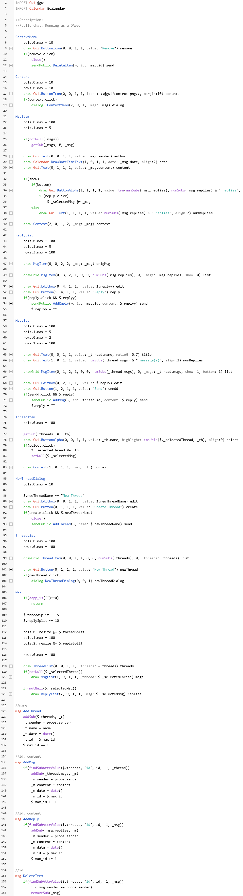

In the last article I outlined my vision for dapp platform. Let's talk about it more.
A lot of people compare blockchain to the early days of the web. They talk about it in the context that blockchain implementations have many problems(scale, txn fees, etc.) so there are not so many users. But the early web also had significant problems like HW was expensive or ISP higher prices: God damn it, you paid for every minute on-the-line! But so many people wanted to be part of the web anyway. Why?
Early websites had one huge advantage - easy to build. Back then there were only static websites and They were made by people who didn't have to know how to code because HTML alone is easy to produce and also you could make a document in MS Word and export it as a .html. Hosting was done through FTP. Websites started like a front-end(back-end was just a folder with HTML and image files). It wasn't like learning C++. Anyone with a browser could be a consumer and creator without much sweat.
I think this was driving web content up, drastically. I don't see anything like that in the blockchain world, because it's not easy to use! If you counted only users who installed and actively used some blockchain software, not users who just hold tokens(mostly bought through centralized 3rd parties), then the community would be way smaller than it looks like through media.
Please keep in mind that I'm talking about EARLY days of the web. Today the situation is that you have to learn 3 languages(HTML, CSS, Javascript) and how they are connected to build a modern website. And that's just a front-end. You also have to know some database, SQL and another language(or Javascript) for the back-end. Uff.
At the beginning of SkyAlt development, I set few basic rules:
1) Developer experience
2) Safe & easy to read 'C' code
3) Performance
4) Memory footprint
This helps a lot during my SkyAlt journey. When I'm thinking about a new feature I'm trying to visualize it first, then how the developer could explain it to the computer through the language and then how I implement it in C code. In other words, Developer first!
In the blockchain world, Startups start with protocol and then moving more closer to humans(user interface). I believe that this direction should be the opposite. Also, SkyAlt is all in one. It's not divided between companies, one building protocol, another language and another IDE.
I've written a lot about the IDE and the language in previous articles, so let's have a look at prototype of the SkyAlt protocol. I called it Atlas.
In the last article, I try to avoid building Atlas, because much more research has to happen. Then I realized that I can build Atlas without consensus or implement a simple one, so developers can start using it and I can keep iterating on the protocol based on their experiences. A big part of designing a decentralized system is game theory and If I wanna solve it, I have to play the game.
The first thing I did was I wrote few smart contracts in Solidity and I search for the most pressing points in dapp development. I think the biggest problem is async communication. Sharding only makes it worst. Less messaging in code is definitely better. Code has to be easy to read and as simple as possible because bugs can be exploited and people may lose their tokens. Security audits will become a huge market in the future.
The craziest thing I discover is Web3. I'm still not sure If I understand it right. Initially, I thought Web3 is the new web standard, but instead you have to install some key manager(Metamask, etc.) and import web3.js(something like a driver) into your website. I hope that Web3 "features" will be implemented into the web standard. Something like that already happened when HTML5 was born to kill Flash.
With the current Web3 design, I see one significant problem. If I wanna be sure that my "actions" went into the decentralized network, I have to go to the particular blockchain explorer(maybe even multiple ones) and see If my transactions are there. So, it's needed to have security audits not only for contracts(back-end) but also for the client, because it runs a full version of Javascript so it can do everything which is possible in Web2 and I wanna be sure that 100% of the back-end is store in decentralize network. Web3 will need stronger sandboxing.
Probably the biggest problem with crypto products right now is cryptography itself. For that billion people out there, everything needs to have "pointers" that people remember. PrivKeys, PubKeys, hashes, etc. can't be exposed to the users. Internet users never write IP address, because we have DNS. In particular words: "Satoshi" over "1A1zP1eP5QGefi2DMPTfTL5SLmv7DivfNa". This problem is well known and many smart devs/designers have already worked on it.
Atlas consensus, routing, DNS, etc. are written in SkyAlt language and are part of blockchain with all changes(updates). So when you run blockchain from the genesis block, it will start with original algorithms for consensus, routing, etc., and update them at the specific time, when you go through blockchain. Pretty crazy, hah? But that's the future: Bitcoin saves only transactions, Ethereum saves bytecode and transactions, but why not save the complete history of changes for consensus, routing, etc. as well. Also, It will be possible to save SkyAlt 'C' source code and distribute binaries(Windows, Linux, Mac, Android, etc.) through blockchain.
Let me describe what is happening in the video below.
I start by creating the new local app and paste already made code. Then I want to convert the app into dapp. I go to wallet, set Name(@forum) and initial Gas(1000) which will be withdraw from My other Dapp(@genesis, set later). I hit publish. The dialog shows up. The last thing I have to do is to choose Sender(@genesis) and I can see data that will be part of the transaction. After hitting Send, the message is signed by the sender and send into the routing app, which spreads the transaction to other nodes. Nodes put it into to block, execute it(register new dapp and @genesis is 1000 gas lighter) and mined the block(temporary PoW). The client is waiting when the @forum dapp is registered and then starts uploading the asset(code, icons, etc.). The publishing process is done.
I create a new thread(test) and add 2 messages(Hello, Bey) and 1 reply(Hmmm). To prove it to you, I go to the routing app which also works as a block explorer, so you can see complete history(dapp register, uploading asset, sending messages) in blocks. Fun!
Few notes. I tried to avoid crypto in GUI as possible, the only painful part is when you hit send, the dialog shows up because you have to confirm the transaction. I see few options on how to skip confirmation dialog, but I'm not really 100% happy with them.
I spend a lot of time thinking about transaction throughput, the scale of the storage, light clients, dapps updates, which you can't see in video and sure there are tons of things that need to be finish and build from scratch, but I'm super happy with the progress.
This is the complete code for Forum dapp. The code has 118 lines and It's all in one(GUI & "smart" contract). The SkyAlt language is still work in progress.

In the 90s, websites were easy to make and host. That's something I don't see in blockchain projects. When that happens, blockchain will be everywhere.
I know it's not natural for technical people to start with how people feel using IDE, then project that to language design and finally define the protocol. It's even worst because you have to do it multiple times before you get it right.
I experienced today's state-of-the-art platforms to create DApps(front/back-end). There is still a lot of research that needs to be done. More UX designers in space, the better. And when something is branded like the Web3, it should be the new version of the web standard, not Web3js.
I presented the new protocol Atlas through the Forum demo. In the video, you can see that the end-user is not exposed to cryptography at all and the final decentralized application is few easy-to-read lines of code.
By the way, SkyAlt is only ~17K lines of C code. The rest is written in SkyAlt language. I will open-source SkyAlt soon! Can't wait to show you.
Milan Suk
22nd April, 2021
{kind=link}